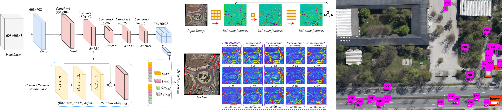

Murari Mandal (PhD Scholar)
Dept. of Computer Science & Engineering
Malaviya National Institute of Technology, Jaipur
Vision Intelligence Lab, JLN Marg, Jaipur, Rajasthan, 302017, India
E-mail- 2015rcp9525@mnit.ac.in murarimandal.cv@gmail.com murari023@gmail.com
Advisor: Dr. Santosh Kumar Vipparthi, Assistant Professor@MNIT Jaipur
About Me Education Publications Google Scholar Researchgate Github
RESEARCH INTERESTS
• Deep Learning • Motion Analysis in Videos • Object Detection • Aerial Scene Analysis: Object Detection, Moving Object Detection, Remote Sensing • Autonomous Driving
RECENT
2019
Oct 2019: Paper accepted in IEEE Signal Processing Letters (Journal, IF:3.2)
Sep 2019: Paper accepted in WACV 2020
June 2019: Paper accepted in IEEE Geoscience and Remote Sensing Letters (Journal: IF:3.5)
May 2019: Paper accepted in CVPR Workshops (AI City Challenge) 2019.
April 2019: Paper accepted in 26th IEEE International Conference on Image Processing (ICIP) 2019 in Taipei, Taiwan.
February 2019: Paper accepted in IET Image Processing (Journal, IF:2.0)
January 2019: Poster accepted at NVIDIA GTC Conference, Silicon Valley, US.
2018
July 2018: Paper accepted in IET Computer Vision (Journal, IF:1.8)
April 2018: Paper accepted in 24th IEEE International Conference on Pattern Recognition (ICPR) 2018.
SELECTED PROJECTS
Vehicle Detection from Aerial View
Paper PPT
Lightweight Vehicle Detector for UAVs
Paper PPT